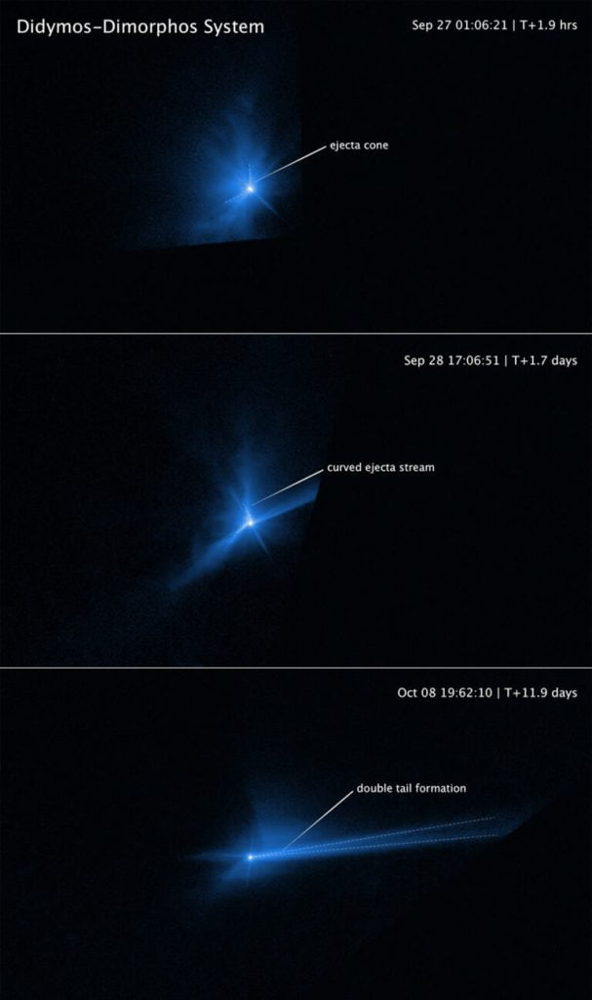

ဒီ စမ်းသပ်မှုကနေ စုဆောင်း ရရှိထားတဲ့ အချက်အလက် တွေကို အသေးစိတ် analysis လုပ် ခွဲခြမ်းစိတ်ဖြာ သုတေသန ပြုအပြီး မှာတော့ ဒီ မစ်ရှင်ရဲ့ အောင်မြင်မှု ဘယ်လောက် အတိုင်းအတာ ရှိသလဲ ဆိုတဲ့ အဖြေ ထွက်ပေါ်လို့ လာခဲ့ပြီ ဖြစ်ပါတယ်။
ဒီ အချက်အလက် တွေကို အခြေပြု analysis လုပ်ထားတဲ့ ရလဒ်တွေကို တင်ပြထားတဲ့ သုတေသန စာတမ်း ၅ စောင်ကို ထုတ်ပြန် လိုက်ပါတယ်။ ဒီ စာတမ်းတွေ အရ DART mission စီမံကိန်းဟာ ကြီးမားတဲ့ အောင်မြင်မှုကြီး တစ်ရပ် ဖြစ်တယ်လို့ သိရပါတယ်။
၂၀၂၂ ခုနှစ် စက်တင်ဘာ ၂၆ ရက်နေ့က DART မစ်ရှင် ဂြိုဟ်တုဟာ ဒိုင်မောဖို့စ် (Dimorphos) ဂြိုဟ်သိမ်ကိုအရှိန် အဟုန်နဲ့ ဝင်ဆောင့် ခဲ့ပါတယ်။ ဒီဖြစ်စဉ်ဟာ အာကာသ စူးစမ်းမှု သမိုင်းမှာ ကြီးမားတဲ့ မှတ်တိုင် တခုပါ။
ဒီ ဖြစ်စဉ်ဟာ ကမ္ဘာဂြိုဟ် ကာကွယ်ရေး စီမံကိန်းရဲ့ ပထမဆုံး ခြေလှမ်းလို့ ဆိုရင် မမှားပါဘူး။ ဒါ့အပြင် သူ့အလိုအလျှောက် ရွှေ့လျားနေတဲ့ အာကာသ သဘာဝ ဝတ္ထုပစ္စည်း တစ်ခုကို လူ့သမိုင်းမှာ ပထမဆုံး အကြိမ်အဖြစ် လမ်းကြောင်း ပြောင်းလဲ ပစ်လိုက် နိုင်တာလဲ ဖြစ်ပါတယ်။
မူလ တွက်ချက်မှုတွေအရ ဒီ စမ်းသပ်မှုကြောင့် ဒိုင်မောဖို့စ် ရဲ့ ပတ်လမ်းကြာချိန်ဟာ အချိန် ၃၂ မိနစ် လျော့နည်းသွားတယ်လို့ ဆိုပါတယ်။ ဒိုင်မောဖို့စ် ဂြိုဟ်သိမ်ဟာ သူ့ထက် ကြီးတဲ့ ဒိုင်ဒမို့စ် ဂြိုဟ်သိမ်ကို ပတ်နေတာ ဖြစ်ပါတယ်။
အခု ထုတ်ပြန်လိုက်တဲ့ သုတေသန စာတမ်း ၅ စောင်ကို ကမ္ဘာကျော် သုတေသန ဂျာနယ်ကြီး တစ်စောင် ဖြစ်တဲ့ Nature သုတေသန ဂျာနယ်မှာ ဖော်ပြထားတာ ဖြစ်ပါတယ်။ ဒီ သုတေသန စာတမ်းတွေမှာ ဂြိုဟ်သိမ်ကို ဝင်ဆောင့်အပြီး နောက်ဆက်တွဲ ဖြစ်ပေါ်လာတဲ့ ဖြစ်စဉ်တွေကို အသေးစိတ် တင်ပြ ဆွေးနွေးထားတာ ဖြစ်ပါတယ်။

DART ဝင်ဆောင့်မှုကြောင့် ဒိုင်မောဖို့စ် လမ်းကြောင်းပြောင်းသွားတယ်
အမေရိကန် ပြည်ထောင်စု John Hopkins တက္ကသိုလ် အသုံးချရူပဗေဒ ဓါတ်ခွဲခန်း (Johns Hopkins Applied Physics Laboratory) က ပညာရှင် အဖွဲ့ဟာ ဒီ ဝင်တိုက်တဲ့ ဖြစ်စဉ်ကို ကမ္ဘာမြေပြင် အခြေစိုက် ရေဒါတွေ အသုံးပြုပြီး လေ့လာ ခဲ့ပါတယ်။ ဒီ ရေဒါကနေ ဖမ်းယူရရှိတဲ့ အချက်အလက် တွေနဲ့ အာကာသယာဉ်ကနေ ရိုက်ကူးထားတဲ့ ဓါတ်ပုံတွေကို အသုံးပြုပြီး ဝင်တိုက်တဲ့ ဖြစ်စဉ်ကို ကွန်ပြူတာပေါ်မှာ ပြန်လည် ပုံဖေါ် ကြည့်ခဲ့ ကြပါတယ်။သူတို့ရဲ့ တွက်ချက်မှု အရ ဒိုင်မောဖို့စ်ရဲ့ ဒြပ်ထု သိပ်သည်းဆဟာ တစ် ကုဗမီတာ ကို ၂,၁၀၀ ကနေ ၂,၇၀၀ ကီလိုဂရမ်အကြား ဒြပ်ထု သိပ်သည်းဆ ရှိမယ်လို့ ခန့်မှန်း ရပါတယ် (2,100 to 2,700 kg per cubic meter)။ ဒီ သိပ်သည်းဆဟာ ကမ္ဘာမြေထု သိပ်သည်းဆရဲ့ တစ်ဝက်လောက်ပဲ ရှိပါတယ်။
North Arizona University you သုတေသီ ခရစ်တင်း သောမတ်စ် (Christine Thomas) နဲ့ အဖွဲ့ဟာ ဒိုင်မောဖိုစ့်ရဲ့ မူလဂြိုဟ်သိမ်ကို တစ်ပတ် ပတ်ရန် ကြာချိန်ကို အတိအကျ တွက်ချက် ခဲ့ပါတယ်။
သူတို့ရဲ တွက်ချက်မှုအရ ဒိုင်မောဖိုစ့်ဟာ သူပတ်နေတဲ့ ဒိုင်ဒမို့စ် ဂြိုဟ်သိမ်ကို တစ်ပတ် ပတ်မိဖို့ အချိန် ၃၃ မိနစ် လျှော့နည်းသွားပါတယ်။ ဒီ အဖြေမှာ မှားနိုင်ခြေ (error margin) က ၁ မိနစ် အတွင်းပဲ ရှိပါတယ်။
အရင်က ပဏာမ တွက်ချက်မှုတွေအရ မှားနိုင်ခြေ ဟာ ၂ မိနစ် အတွင်း ရှိနေ ခဲ့ပါတယ်။ ဆိုလိုတာက အရင် တွက်ချက်မှု အရ ရလာတဲ့ အဖြေဟာ အဖြေမှန်နဲ့ ၂ မိနစ် အထိ ကွာခြား နိုင်ပြီး အခု တွက်ချက်မှု အသစ်အရတော့ အဖြေမှန်နဲ့ အလွန်ဆုံး ၁ မိနစ် အထိပဲ လွဲနိုင်တယ်လို့ ဆိုလိုတာ ဖြစ်ပါတယ်။
ဒီ ရရှိလာတဲ့ အချက်တွေကို မူတည်ပြီး ဂျွန်ဟော့ကင်း တက္ကသိုလ်က နက္ခတ် ပညာရှင်တွေ ဖြစ်ကြတဲ့ အင်ဒရူး ချန်း (Andrew Cheng) နဲ့ အဖွဲ့ဟာ ဒိုင်မော့ဖို့စ် ရဲ့ ပတ်လမ်းတလျှောက် အလျင် (velocity) ပြောင်းလဲမှုကို အသေးစိတ် တွက်ချက် နိုင်ခဲ့ ကြပါတယ်။

သူတို့ရဲ့ တွက်ချက်မှု အရ ဒီလို တိုက်မိလိုက် ချိန်မှာ အတိုက်ခံ ရတဲ့ ဒိုင်မောဖို့စ် ဂြိုဟ်သိမ် ရဲ့ မျက်နှာပြင်ကနေ လွင့်ထွက်လာတဲ့ ဖုန်တွေ၊ ခဲတွေ နဲ့ ကျောက်အပိုင်းအစတွေကနေ ပေးတဲ့ အဟုန်က DART ယာဉ်က တိုက်ရိုက် ပေးတဲ့ အဟုန်ထက် ပိုများတယ် ဆိုတာကို တွေ့လာ ရပါတယ်။
ဒီ လွင့်ထွက်လာတဲ့ ဖုန်မှုန့်နဲ့ ကျောက်အပိုင်းအစ တွေဟာ DART ကြောင့် ဖြစ်လာတဲ့ အဟုန်ကို ၃.၆၁ ဆ ပိုပြီး များသွား စေတယ် ဆိုတာကိုလဲ တွေ့ခဲ့ ရပါတယ်။ ဒီ အဟုန်ကြောင့် ဒိုင်မောဖို့စ်ဟာ မူရင်း ပတ်လမ်းကနေ သွေဖည်ပြီး ပတ်လမ်း အသစ်ကို ရောက်ရှိ သွားခဲ့ ရပါတယ်။
ဒီ ပမာဏ ဟာ မူလက သိပ္ပံ ပညာရှင်တွေ မျှော်လင့် ထားခဲ့တဲ့ momentum transfer ပမာဏ ထက် ပိုများ နေပါတယ်။
အပျော်တမ်းသိပ္ပံပညာရှင်များ၏ပါဝင်ပံ့ပိုးမှု
DART ယာဉ် ဝင်ဆောင့်မှုကို စောင့်ကြည့်နေ ခဲ့ကြ သူတွေထဲမှာ နက္ခတ် မျှော်စင် ကြီးတွေက ပညာရှင် တွေတင် မကပါဘူး။ ကမ္ဘာ တဝှမ်းက နက္ခတ် ဝါသနာ ရှင်တွေကလဲ ဒီ ဖြစ်စဉ်ကို စောင့်ကြည့် လေ့လာ ခဲ့ကြပါတယ်။SETI Institute က ပညာရှင် Ariel Graykowski ဦးဆောင်တဲ့ သုတေသနဟာ ဒီ အပျော်တမ်း သိပ္ပံ ပညာရှင်တွေ (citizen scientists) တွေရဲ့ ပါဝင်ပံ့ပိုးမှုကြောင့် ဖြစ်လာရတဲ့ သုတေသန ဖြစ်ပါတယ်။ ဒီ သုတေသန စာတမ်းမှာ ဒိုင်မောဖို့စ် ရဲ့ အလင်းရောင်ပြန် ပြောင်းလဲမှုကို မတိုက်မီ၊ တိုက်မိချိန် နဲ့ တိုက်မိပြီး ကာလတွေ အတွက် နှိုင်းယှဉ် ပြထားပါတယ်။
ဒီ citizen scientists ၃၁ ဦးဟာ ကမ္ဘာ့ တိုက်ကြီး ၅ တိုက်မှာ နေထိုင်ကြတဲ့ အပျော်တမ်း သိပ္ပံ ပညာရှင်တွေ ဖြစ်ကြပါတယ်။ သူတို့ဟာ သူတို့ အသုံးပြုတဲ့ Unistellar eVscopes တယ်လီစကုပ် တွေကနေ ဖမ်းယူထားတဲ့ အချက်အလက် တွေကို SETI သုတေသန ဌာနကို တင်ပြ ခဲ့ကြပါတယ်။
ဒီ ရရှိတဲ့ အလင်းရောင်ပြန် အချက်အလက် တွေကို အသုံးပြုပြီး Graykowski နဲ့ အဖွဲ့ဟာ ဒိုင်မောဖို့စ် ကနေ လွင့်ထွက်လာတဲ့ အပိုင်းအစ တွေရဲ့ ဒြပ်ထု၊ အလျင် နဲ့ စွမ်းအင် (mass, speed, and energy of the ejecta) တွေကို ခန့်မှန်း တွက်ချက် နိုင်ခဲ့ ကြပါတယ်။
သူတို့ရဲ့ တွက်ချက်မှု အရ ဒိုင်မောဖို့စ်ကနေ လွင့်ထွက်လာတဲ့ အပိုင်းအစတွေရဲ့ ဒြပ်ထု စုစုပေါင်းဟာ ဒိုင်မောဖို့စ် ဂြိုဟ်သိမ် တစ်ခုလုံး ဒြပ်ထုရဲ့ ၀.၃ ကနေ ၀.၅% အကြားပဲ ရှိမယ်လို့ ဆိုပါတယ်။ တနည်းအားဖြင့် ဒီ DART ယာဉ် ဝင်တိုက်မှုဟာ ဒိုင်မောဖို့စ်ကို ပြိုကွဲ သွားစေနိုင်တဲ့ အထိ မဖြစ်ခဲ့ပါဘူး။
သူတို့ရရှိတဲ့ အဖြေဟာ Chang နဲ့ အဖွဲ့က ခန့်မှန်းထားတဲ့ momentum လွှဲပြောင်းမှုကြောင့် ဖြစ်လာမယ့် အပိုင်းအစ လွင့်စင်မှု ပမာဏ နဲ့ တူညီ နေတာကိုလဲ တွေ့ကြ ရပါတယ်။
ဒီလို တိုက်မိမှုက ဒိုင်မောဖို့စ်ကို ပြိုကွဲ ပျက်စီးသွားစေခြင်း မရှိပေ မယ့်လဲ အခုလို ဝင်တိုက်မှုကြောင့် ဒိုင်မေဖို့စ် ဟာ အသက်ဝင် လာတဲ့ ဥက္ကာခဲ တစ်လုံး အဖြစ် ပြောင်းလဲ သွားခဲ့ပါတယ်။ အသက်ဝင် နေတဲ့ ဥက္ကာခဲ (active asteroid) တွေမှာ ကြယ်တံခွန် တွေလို ဦးခေါင်း နဲ့ အမြှီးတန်း ပါရှိပြီး (tail and coma) ပါဝင်ပါတယ်။
ယခင်ကတဲက သိပ္ပံ ပညာရှင် တွေဟာ ဥက္ကာခဲ တစ်လုံးကို အခြား အရာဝတ္ထု တခုက အရှိန်အဟုန်နဲ့ ဝင်ဆောင့်ခဲ့ရင် ဒီ ဥက္ကာခဲကို အသက်ဝင်လာ စေနိုင်မယ်လို့ ယုံကြည်ခဲ့ ကြပါတယ်။ ဒါပေမယ့် အခု ဖြစ်စဉ်ဟာ ဒီ သီအိုရီ ကို လက်တွေ့ မြင်ရတဲ့ ပထမဆုံး အထောက်အထား ပဲ ဖြစ်ပါတယ်။

Scence: NASA / ESA / STScI, Jian-Yang Li (PSI);
Image processing: Joseph DePasquale (STScI)
ကမ္ဘာမြေကာကွယ်ရေး၏ အနာဂါတ်
DART မစ်ရှင်ဟာ ကမ္ဘာမြေကို ဥက္ကာပျံ တွေ ရန်က ဘယ်လိုကာကွယ် မလဲ ဆိုတာနဲ့ ပတ်သက်လို့ အသိအမြင် အသစ်တွေ ရရှိ စေခဲ့ပါတယ်။ ကျွန်တော်တို့ဟာ ဥက္ကာပျံတွေ ရန်ကနေ ကာကွယ်ဖို့ အကာအကွယ် မဲ့ မနေဘူး ဆိုတာကိုလဲ သက်သေ ပြနိုင် ခဲ့ပါတယ်။ဒီ စမ်းသပ်မှုမှာ ဥက္ကာပျံ တစ်စင်းကို မူလပျံသန်းရာ လမ်းကြောင်းကနေ သွေဖည်ပြီး လမ်းကြောင်း ပြောင်းသွားအောင် စမ်းသပ် သက်သေ ပြနိုင် ခဲ့ပါတယ်။ မူလက သီအိုရီ အဆင့်ကနေ လက်တွေ့ စမ်းသပ်မှု အဆင့်ထိ အောင်မြင်စွာ တက်လှမ်း နိုင်ခဲ့ပါတယ်။
၂၀၂၄ မှာ ဥရောက အာကာသ အေဂျင်စီ ကနေ လွှတ်တင်မယ့် Hera မစ်ရှင်ကနေလဲ ဒိုင်ဒမို့စ် – ဒိုင်မောဖို့စ့် စမ်းသပ်မှုရဲ့ နောက်ဆက်တွဲ တွေကို အသေးစိတ် သိရှိရမှာ ဖြစ်ပါတယ်။ ၂၀၂၄ အောက်တိုဘာမှာ လွှတ်တင်ပြီး ၂၀၂၆ မှာ ဒိုင်မောဖို့စ် ဆီ ရောက်ရှိမယ့် ဒီ အာကာသ ယာဉ်စီမံကိန်းမှာ ဒိုင်မောဖို့စ် ရဲ့ မျက်နှာပြင်ကို အသေးစိတ် လေ့လာမှာ ဖြစ်ပါတယ်။
အရေးအကြီးဆုံး အချက်ကတော့ ဟီရာ ဟာ ဒိုင်မောဖို့စ်ရဲ့ ဒြပ်ထုကို တိုင်းတာမှာ ဖြစ်ပါတယ်။ နောက်ပြီး ဝင်တိုက်ခဲ့တဲ့ အတွက် ဖြစ်ပေါ်လာခဲ့တဲ့ တွင်း (crater) ရဲ့ အရွယ်အစား နဲ့ အခြား ပြောင်းလဲမှုတွေကိုလဲဲ တိုင်းတာမှာ ဖြစ်ပါတယ်။
ဒီုင်မောဖို့စ် ကနေ ရရှိတဲ့ အချက်အလက် တွေကိုကို အသေးစိတ် လေ့လာခြင်း အားဖြင့် ကမ္ဘာ့ လူသားတွေဟာ တကယ် ဥက္ကာပျံတွေ ကမ္ဘာကို ဦးတည်လာ ခဲ့ရင် ခုခံဖို့ အဆင်သင့် ဖြစ်နေအောင် အသင့်ပြင် ထားနိုင် ကမှာ ဖြစ်ပါတယ်။
Ref: THE AFTERMATH OF DART, HUMANKIND’S FIRST PLANETARY DEFENSE MISSION | Sky and Telescope